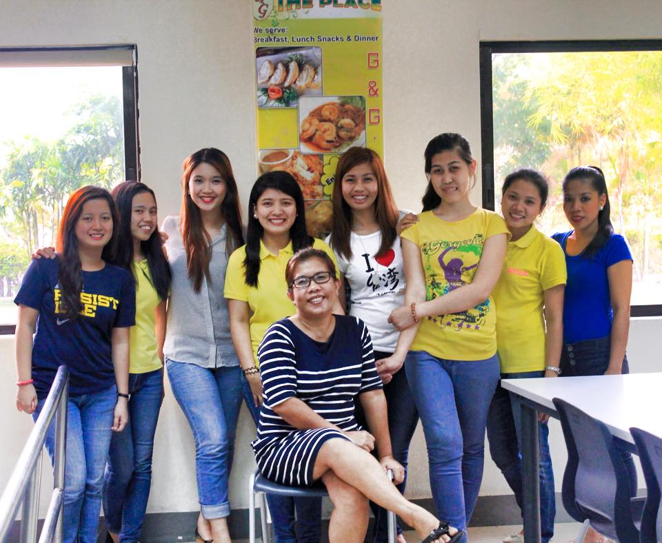
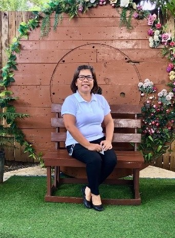

About Us

Welcome to THE PLACE G&G Food Catering Services! At THE PLACE G&G Food Catering Services, we take pride in arranging, organizing, and coordinating events according to our clients' specific requirements. We understand the importance of creating memorable experiences and strive to exceed expectations through our attention to detail and personalized service.
We are equipped with a dedicated team, service vehicles, catering materials, and other essential supplies to ensure a seamless and enjoyable event. Our venue is designed to be conducive and accessible to everyone, offering a comfortable and welcoming atmosphere.
In addition to our catering services, we are proud to have established Gian & Gaela's Pasta Corner, the very first Pasta Corner in Lyceum of the Philippine Batangas Campus. We also operate G&G Canteen, conveniently located in front of Golden Gate General Hospital, serving hospital employees and patient relatives. Moreover, we accept orders for outside clients through our food-to-go services.
To further meet the diverse needs of our customers, we have introduced additional offerings. THE PLACE G&G Function Hall, a two-storey air-conditioned hall located in Libjo Tacad, is available for various events. On the second floor, we have G&G MOM's Kitchen, an Italian-Filipino restaurant that caters to pasta and pizza lovers.
At G&G THE PLACE, we believe in giving back to the community. The success of our business enables us to contribute to the livelihood of our staff from Simlong, Pinamucan, Mabacong, and nearby Barangays, providing opportunities for growth and development.
At THE PLACE G&G Food Catering Services, we are committed to delivering exceptional food and service that exceed expectations. Join us in creating unforgettable experiences for your next event.
Year 2000
With over two decades of experience in the food industry, we have been proudly serving the Batangas area and nearby provinces since the year 2000. Our mission is to provide exceptional catering services for a wide range of events, including weddings, anniversaries, birthdays, christenings, corporate activities, trainings, seminars, meetings, and parties.
CECILIA COMO CARINGAL
Our owner, a graduate of BS Industrial Education major in Food Technology, possesses extensive knowledge and expertise in the field. With 36 units in Masters in Business Management and Masters in Public Administration, as well as two years of study in the College of Law, our owner's educational background and teaching experience in Business Entrepreneurship at the University of Batangas have greatly contributed to the success of our business.